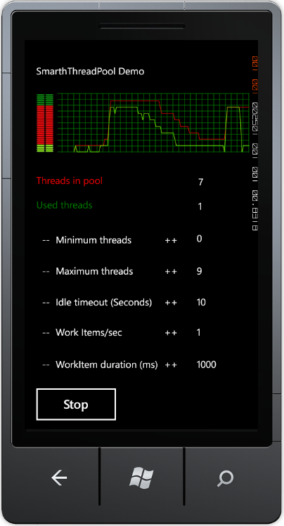

See the History section at the bottom for changes.
This is a Thread Pool; if you got here, you probably know what you need. If you want to understand the features and know how it works, keep reading the sections below. If you just want to use it, here is a quick usage snippet. See examples for advanced usage.
// Create an instance of the Smart Thread Pool
SmartThreadPool smartThreadPool = new SmartThreadPool();
// Queue an action (Fire and forget)
smartThreadPool.QueueWorkItem(System.IO.File.Copy,
@"C:\Temp\myfile.bin", @"C:\Temp\myfile.bak");
// The action (file copy) will be done in the background by the Thread Pool
Smart Thread Pool is a thread pool written in C#. The implementation was first based on Stephan Toub's thread pool with some extra features, but now, it is far beyond the original. Here is a list of the thread pool features:
PostExecute callback, which is called as soon the work item is completed.Action<T> and Func<T> generic methods are supported."Many applications create threads that spend a great deal of time in the sleeping state, waiting for an event to occur. Other threads might enter a sleeping state only to be awakened periodically to poll for a change or update status information. Thread pooling enables you to use threads more efficiently by providing your application with a pool of worker threads that are managed by the system. One thread monitors the status of several wait operations queued to the thread pool. When a wait operation completes, a worker thread from the thread pool executes the corresponding callback function".
MSDN, April 2004, ThreadPool Class [C#].
When I wrote my application, I discovered that I needed a thread pool with the following features:
QueueUserWorkItem() method to comply with the .NET ThreadPool.After I published the Smart Thread Pool here, I found out that more features were required and some features had to change. So, the following is an updated list of the implemented features:
Because of features 3 and 5, the thread pool no longer complies to the .NET ThreadPool, and so I could add more features.
See the additional features section below for the new features added in this version.
GetResult(), rather than firing an UnhandledException event. Note that PostExecute exceptions are always ignored.MaxThreads/MinThreads/Concurrency at run time.IsIdle flag to SmartThreadPool and to IWorkItemsGroup.Action<T> and Func<T> (strong typed work items) (see section 3).Join, Choice, and Pipe.
The Windows system provides one .NET ThreadPool for each process. The .NET ThreadPool can contain up to 25 (by default) threads per processor. It is also stated that the operations in the .NET ThreadPool should be quick to avoid suspension of the work of others who use the .NET ThreadPool. Note that several AppDomains in the same process share the same .NET ThreadPool. If you want a thread to work for a long period of time, then the .NET ThreadPool is not a good choice for you (unless you know what you are doing). Note that each asynchronous method call from the .NET Framework that begins with "Begin…" (e.g., BeginInvoke, BeginSend, BeginReceive, etc.) uses the .NET ThreadPool to run its callback. Also note that the .NET ThreadPool doesn't support calls to COM with single threaded apartment (STA), since the ThreadPool threads are MTA by design.
This thread pool doesn't comply with the requirements 1, 5, 6, 8, 9, 10, 12-25.
Note that the requirements 3 and 4 are implemented in .NET ThreadPool with delegates.
Toub's thread pool is a better choice than the .NET ThreadPool, since a thread from his pool can be used for a longer period of time without affecting asynchronous method calls. Toub's thread pool uses static methods; hence, you cannot instantiate more than one thread pool. However, this limitation applies per AppDomain rather than the whole process. The main disadvantage of Toub's thread pool over the .NET TheradPool is that Toub creates all the threads in the pool at the initialization point, while the .NET ThreadPool creates threads on the fly.
This thread pool doesn't comply with the requirements 1, 2, 3, 4, 5, 6, 8-25.
As I mentioned before, the Smart Thread Pool is based on Toub's thread pool implementation. However, since I have expanded its features, the code is no longer similar to the original one.
Features implementation:
The reason I need an instantiable thread pool is because I have different needs. I have work items that take a long time to execute, and I have work items that take a very short time to execute. Executing the same type of work items on the same thread pool may cause some serious performance or response problems.
To implement this feature, I just copied Toub's implementation and removed the static keyword from the methods. That's the easy part of it.
The number of threads dynamically changes according to the workload on the threads in the pool, with lower and upper constraints for the number of threads in the pool. This feature is needed so we won't have redundant threads in the application.
This feature is a real issue, and is the core of the Smart Thread Pool. How do you know when to add a new thread and when to remove it?
I decided to add a new thread every time a new work item is queued and all the threads in the pool are busy. The formula for adding a new thread can be summarized to:
_currentWorkItemsCount > WorkerThreads
where WorkerThreads is the current number of threads in the pool, InUseThreads is the number of threads in the pool that are currently working on a work item, and WaitingCallbacks is the number of waiting work items. (Thanks to jrshute for the comment.)
The SmartThreadPool.Enqueue() method looks like this:
private void Enqueue(WorkItem workItem)
{
// Make sure the workItem is not null
Debug.Assert(null != workItem);
// Enqueue the work item
_workItemsQueue.EnqueueWorkItem(workItem);
// If all the threads are busy then try
// to create a new one
if (_currentWorkItemsCount > _workerThreads.Count)
{
StartThreads(1);
}
}
When the number of threads reaches the upper limit, no more threads are created.
I decided to remove a thread from the pool when it is idle (i.e., the thread doesn't work on any work item) for a specific period of time. Each time a thread waits for a work item on the work item's queue, it also waits for a timeout. If the waiting exceeds the timeout, the thread should leave the pool, meaning the thread should quit if it is idle. It sounds like a simple solution, but what about the following scenario: assume that the lower limit of threads is 0 and the upper limit is 100. The idle timeout is 60 seconds. Currently, the thread pool contains 60 threads, and each second, a new work item arrives, and it takes a thread one second to handle a work item. This means that, each minute, 60 work items arrive and are handled by 60 threads in the pool. As a result, no thread exits, since no thread is idle for a full 60 seconds, although 1 or 2 threads are enough to do all the work.
In order to solve the problem of this scenario, you have to calculate how much time each thread worked, and once in a while, exit the threads that don't work for enough time in the timeout interval. This means, the thread pool has to use a timer (use the .NET ThreadPool) or a manager thread to handle the thread pool. To me, it seems an overhead to use a special thread to handle a thread pool.
This led me to the idea that the thread pool mechanism should starve the threads in order to let them quit. So, how do you starve the threads?
All the threads in the pool are waiting on the same work items queue. The work items queue manages two queues: one for the work items and one for the waiters (the threads in the pool). Since the trivial work items queue works, the first arrived waiter for a work item gets it first (queue), and so you cannot starve the threads.
Have a look at the following scenario:
The thread pool contains four threads. Let's name them A, B, C, and D. Every second, a new work item arrives, and it takes less than one second and a half to handle each work item:
|
Work item arrival time (sec) |
Work item work duration (sec) |
Threads queue state |
The thread that will execute the arrived work item |
|
00:00:00 |
1.5 |
A, B, C, D |
A |
|
00:00:01 |
1.5 |
B, C, D |
B |
|
00:00:02 |
1.5 |
C, D, A |
C |
|
00:00:03 |
1.5 |
D, A, B |
D |
In this scenario, all the four threads are used, although two threads could handle all the work items.
The solution is to implement the waiters queue as a stack. In this implementation, the last arrived waiter for a work item gets it first (stack). This way, a thread that just finished its work on a work item waits as the first waiter in the queue of waiters.
The previous scenario will look like this with the new implementation:
|
Work item arrival time (sec) |
Work item work duration (sec) |
Threads queue state |
The thread that will execute the arrived work item |
|
00:00:00 |
1.5 |
A, B, C, D |
A |
|
00:00:01 |
1.5 |
B, C, D |
B |
|
00:00:02 |
1.5 |
A, C, D |
A |
|
00:00:03 |
1.5 |
B, C, D |
B |
Threads A and B handle all the work items, since they get back to the front of the waiters queue after they have finished. Threads C and D are starved, and if the same work items are going to arrive for a long time, then threads C and D will have to quit.
The thread pool doesn't implement a load balancing mechanism, since all the threads run on the same machine and take the same CPUs. Note that if you have many threads in the pool, then you will prefer the minimum number of threads to do the job, since each context switch of the threads may result in paging of the threads' stacks. Less working threads means less paging of the threads' stacks.
The work items queue implementation causes threads to starve, and the starved threads quit. This solves the scenario I mentioned earlier without using any extra thread.
The second feature also states that there should be a lower limit to the number of threads in the pool. To implement this feature, every thread that gets a timeout, because it doesn't get any work items, checks whatever it can quit. Smart Thread Pool allows the thread to quit only if the current number of threads is above the lower limit. If the number of threads in the pool is below or equal to the lower limit, then the thread stays alive.
This feature is very useful in cases where you want to know the result of a work item.
The .NET ThreadPool supports this feature via delegates. Each time you create a delegate, you get the BeginInvoke() and EndInvoke() methods for free. BeginInvoke() queues the method and its parameters on the .NET ThreadPool, and EndInvoke() returns the result of the method. The delegate class is sealed, so I couldn't override the BeginInvoke() and EndInvoke() methods. I took a different approach to implement this.
First, the work item callback delegate can return a value:
public delegate object WorkItemCallback(object state);
Or in its enhanced form, the callback can be any of the following forms:
public delegate void Action();
public delegate void Action<T>(T arg);
public delegate void Action<T1, T2>(T1 arg1, T2 arg2);
public delegate void Action<T1, T2, T3>(T1 arg1,
T2 arg2, T3 arg3);
public delegate void Action<T1, T2, T3, T4>(T1 arg1,
T2 arg2, T3 arg3, T4 arg4);
public delegate TResult Func();
public delegate TResult Func<T>(T arg1);
public delegate TResult Func<T1, T2>(T1 arg1, T2 arg2);
public delegate TResult Func<T1, T2, T3>(T1 arg1,
T2 arg2, T3 arg3);
public delegate TResult Func<T1, T2, T3, T4>(T1 arg1,
T2 arg2, T3 arg3, T4 arg4);
(Note that the above delegates are defined in .NET 3.5. In .NET 2.0 & 3.0, only public delegate void Action<T>(T arg) is defined.) Second, the SmartThreadPool.QueueWorkItem() method returns a reference to an object that implements the IWorkItemResult<TResult> interface. The caller can use this object to get the result of the work item. The interface is similar to the IAsyncResult interface:
public interface IWorkItemResult<TResult>
{
/// Get the result of the work item.
/// If the work item didn't run yet then the caller waits
/// until timeout or until the cancelWaitHandle is signaled.
/// If the work item threw then GetResult() will rethrow it.
/// Returns the result of the work item.
/// On timeout throws WorkItemTimeoutException.
/// On cancel throws WorkItemCancelException.
TResult GetResult(
int millisecondsTimeout,
bool exitContext,
WaitHandle cancelWaitHandle);
/// Some of the GetResult() overloads
/// get Exception as an output parameter.
/// In case the work item threw
/// an exception this parameter is filled with
/// it and the GetResult() returns null.
/// These overloads are provided
/// for performance reasons. It is faster to
/// return the exceptions as an output
/// parameter than rethrowing it.
TResult GetResult(..., out Exception e);
/// Other GetResult() overloads.
...
/// Gets an indication whether
/// the asynchronous operation has completed.
bool IsCompleted { get; }
/// Returns the user-defined object
/// that was provided in the QueueWorkItem.
/// If the work item callback is Action<...>
/// or Func<...> the State value
/// depends on the WIGStartInfo.FillStateWithArgs.
object State { get; }
/// Cancel the work item execution.
/// If the work item is in the queue, it won't execute
/// If the work item is completed, it will remain completed
/// If the work item is already cancelled it will remain cancelled
/// If the work item is in progress,
/// the result of the work item is cancelled.
/// (See the work item canceling section for more information)
/// Param: abortExecution - When true send an AbortException
/// to the executing thread.</param>
/// Returns true if the work item
/// was not completed, otherwise false.
bool Cancel(bool abortExecution);
/// Get the work item's priority
WorkItemPriority WorkItemPriority { get; }
/// Returns the result, same as GetResult().
/// Note that this property blocks the caller like GetResult().
TResult Result { get; }
/// Returns the exception, if occured, otherwise returns null.
/// This function is not blocking like the Result property.
object Exception { get; }
}
If the work item callback is object WorkItemCallback(object state), then IWorkItemResult is returned, and GetResult() returns object. Same as in previous versions.
If the work item callback is one of the Func<...> methods I mentioned above, the result of QueueWorkItem is IWorkItemResult<TResult>. So, the result of the work item is strongly typed.
If the work item callback is one of the Action<...> methods I mentioned above, the result of QueueWorkItem is IWorkItemResult and GetResult() always returns null.
If the work item callback is Action<...> or Func<...> and WIGStartInfo.FillStateWithArgs is set to true, then the State of the IWorkItemResult is initialized with a object [] that contains the work item arguments. Otherwise, the State is null.
The code examples in the section below show some snippets of how to use it.
To get the result of the work item, use the Result property or the GetResult() method. This method has several overloads. In the interface above, I have written only some of them. The other overloads use less parameters by giving default values. The GetResult() returns the result of the work item callback. If the work item hasn't completed, then the caller waits until one of the following occurs:
| GetResult() return reason | GetResult() return value |
| The work item has been executed and completed. | The result of the work item. |
| The work item has been canceled. | Throws WorkItemCancelException. |
| The timeout expired. | Throws WorkItemTimeoutException. |
The cancelWaitHandle is signaled. |
Throws WorkItemTimeoutException. |
| The work item threw an exception. | Throws WorkItemResultException with the work item's exception as the inner exception. |
There are two ways to wait for a single work item to complete:
GetResult() method which blocks the caller until the result is available:private void WaitForResult1(IWorkItemResult wir)
{
wir.GetResult();
}
private void WaitForResult2(IWorkItemResult wir)
{
while(!wir.IsCompleted)
{
Thread.Sleep(100);
}
}
This feature is very useful if you want to run several work items at once and then wait for all of them to complete. The SmartThreadPool class has two static methods for this: WaitAny() and WaitAll() (they have several overloads). Their signature is similar to the WaitHandle equivalent methods except that in the SmartThreadPool case, it gets an array of IWaitableResult (the IWorkItemResult interface inherits from IWaitableResult) objects instead of WaitHandle objects.
The following snippets show how to wait for several work item results at once. Assume wir1 and wir2 are of type IWorkItemResult. You can wait for both work items to complete:
// Wait for both work items complete
SmartThreadPool.WaitAll(new IWaitableResult[] { wir1, wir2});
Or, for any of the work items to complete:
// Wait for at least one of the work items complete
SmartThreadPool.WaitAny(new IWaitableResult[] { wir1, wir2});
The WaitAll() and WaitAny() methods are overloaded, so you can specify the timeout, the exit context, and cancelWaitHandle (just like in the GetResult() method mentioned earlier).
Note that in order to use WaitAny() and WaitAll(), you need to work in MTA, because internally, I use WaitHandle.WaitAny() and WaitHandle.WaitAll() which require it. If you don't do that, the methods will throw an exception to remind you.
Also note that Windows supports WaitAny() of up to 64 handles. WaitAll() is more flexible, and I re-implemented it so it is not limited to 64 handles.
See in the examples section below, the code snippets for WaitAll and WaitAny.
This feature enables to cancel work items.
There are several options to cancel work items. To cancel a single work item, call IWorkItemResult.Cancel(). To cancel more than one, call IWorkItemsGroup.Cancel() or SmartThreadPool.Cancel(). All cancels works in O(1).
There is no guarantee that a work item will be cancelled, it depends on the state of the work item when the cancel is called and the cooperation of the work item. (Note that the work item's state I mention here has nothing to do with the state object argument provided in the QueueWorkItem.)
These are the possible states of a work item (defined in the WorkItemState enum):
Queued – The work item is waiting in a queue to be executed.InProgress – A thread from the pool is executing the work item.Completed – The work item execution has been completed.Cancelled – The work item has been cancelled.The cancel behavior depends on the state of the work item.
| Initial State | Next State | Notes |
Queued |
Cancelled |
A queued work item becomes cancelled and is not executed at all. |
InProgress |
Cancelled |
An executing work item becomes cancelled even if it completes its execution! |
Completed |
Completed |
A completed work item stays completed. |
Cancelled |
Cancelled |
A cancelled work item stays cancelled. |
A cancelled work item throws a WorkItemCancelException when its GetResult() method is called.
The behavior of Cancel() when the work item is in Completed or Cancelled states is straightforward, so I won't get into the details. A queued work item is marked as cancelled and is discarded once a thread from the pool dequeues it.
If a work item is in the InProgress state, then the behavior depends on the value of abortExecution in the Cancel call. When abortExecution is true, a Thread.Abort() will be called upon the executing thread. When abortExecution is false, the work item method is responsible to sample the SmartThreadPool.IsWorkItemCanceled static method and quit. Note that, in both cases, the work item is cancelled, and throws a WorkItemCancelException on GetResult().
Here is an example of a cooperative work item:
private void DoWork()
{
// Do something here.
// Sample SmartThreadPool.IsWorkItemCanceled
if (SmartThreadPool.IsWorkItemCanceled)
{
return;
}
// Sample the SmartThreadPool.IsWorkItemCanceled in a loop
while (!SmartThreadPool.IsWorkItemCanceled)
{
// Do some work here
}
}
This feature should be elementary, but it is not so simple to implement. In order to pass the thread's context, the caller thread's CompressedStack should be passed. This is impossible since Microsoft blocks this option with security. Other parts of the thread's context can be passed. These include:
CurrentCulture - The culture of the thread.CurrentUICulture - The culture used by the resource manager to look up culture-specific resources at run time.CurrentPrincipal - The current principal (for role-based security).CurrentContext - The current context in which the thread is executing (used in remoting).The first three belong to the System.Threading.Thread class (static or instance), and are get/set properties. However, the last one is a read only property. In order to set it, I used Reflection, which slows down the application. If you need this context, just remove the comments from the code.
To simplify the operation of capturing the context and then applying it later, I wrote a special class that is used internally and does all that stuff. The class is called CallerThreadContext, and it is used internally. When Microsoft unblocks the protection on the CompressedStack, I will add it there.
The caller thread's context is stored when the work item is created, within the EnqueueWorkItem() method. Each time a thread from the pool executes a work item, the thread's context changes in the following order:
The seventh feature is a result of Kevin's comment on the earlier version of Smart Thread Pool. It seemed that the test application consumed a lot of handles (Handle Count in the Task Manager) without freeing them. After a few tests, I got to the conclusion that the Close() method of the ManualResetEvent class doesn't always release the Win32 event handle immediately, and waits for the garbage collector to do that. Hence, running the GC explicitly releases the handles.
To make this problem less acute, I used a new approach. First, I wanted to create less number of handles; second, I wanted to reuse the handles I had already created. Therefore, I need not expose any WaitHandle, but use them internally and then close them.
In order to create fewer handles, I created the ManualResetEvent objects only when the user asks for them (lazy creation). For example, if you don't use the GetResult() of the IWorkItemResult interface, then a handle is not created. Using SmartThreadPool.WaitAll() and SmartThreadPool.WaitAny() creates a handle.
The work item queue creates a lot of handles since each new wait for a work item creates a new ManualResetEvent. Hence, a handle for each work item. The waiters of the queue are always the same threads, and a thread cannot wait more than once. So now, every thread in the thread pool has its own ManualResetEvent and reuses it. To avoid coupling of the work items queue and the thread pool implementation, the work items queue stores a context inside the TLS (Thread Local Storage) of the thread.
A PostExecute is a callback method that is called right after the work item execution has been completed. It runs in the same context of the thread that executes the work item. The user can choose the cases in which PostExecute is called. The options are represented in the CallToPostExecute flagged enumerator:
[Flags]
public enum CallToPostExecute
{
Never = 0x00,
WhenWorkItemCanceled = 0x01,
WhenWorkItemNotCanceled = 0x02,
Always = WhenWorkItemCanceled | WhenWorkItemNotCanceled,
}
Explanation:
Never – Don't run PostExecute.WhenWorkItemCanceled - Run PostExecute only when the work item has been canceled.WhenWorkItemNotCanceled - Run PostExecute only when the work item has not been canceled.Always – Always run PostExecute.SmartThreadPool has a default CallToPostExecute value of CallToPostExecute.Always. This can be changed during the construction of SmartThreadPool in the STPStartInfo class argument. Another way to give the CallToPostExecute value is in one of the SmartThreadPool.QueueWorkItem overloads. Note that, as opposed to the WorkItem execution, if an exception has been thrown during PostExecute, then it is ignored. PostExecute is a delegate with the following signature:
public delegate void PostExecuteWorkItemCallback(IWorkItemResult wir);
As you can see, PostExecute receives an argument of type IWorkItemResult. It can be used to get the result of the work item, or any other information made available by the IWorkItemResult interface.
When the user calls QueueWorkItem, he/she can provide a state object. The state object usually stores specific information, such as arguments that should be used within the WorkItemCallback delegate.
The state object life time depends on its contents and the user's application. Sometimes, it is useful to dispose off the state object just after the work item has been completed. Especially if it contains unmanaged resources.
For this reason, I added a boolean to SmartThreadPool that indicates to call Dispose on the state object when the work item has been completed. The boolean is initialized when the thread pool is constructed with STPStartInfo. Dispose is called only if the state object implements the IDisposable interface. Dispose is called after the WorkItem has been completed and its PostExecute has run (if a PostExecute exists). The state object is disposed even if the work item has been canceled or the thread pool has been shutdown.
Note that this feature only applies to the state argument that comes with WorkItemCallback, it doesn't apply to the arguments supplied in Action<...> and Func<...>!!!
This feature enables the user to wait for a Smart Thread Pool or a Work Items Group to become idle. They become idle when the work items queue is empty and all the threads have completed executing all their work items.
This is useful in case you want to run a batch of work items and then wait for all of them to complete. It saves you from handling the IWorkItemResult objects in case you just want to wait for all of the work items to complete.
The SmartThreadPool and WorkItemsGroup classes both implement the IWorkItemsGroup interface which defines the WaitForIdle methods.
To take advantage of this feature, use the IWorkItemsGroup.WaitForIdle() method (both SmartThreadPool and WorkItemsGroup implement the IWorkItemsGroup interface which defines the WaitForIdle methods). It has several overloads which provide a timeout argument. The WaitForIdle() method is not static, and should be used on a SmartThreadPool instance.
SmartThreadPool always keeps track of how many work items it has. When a new work item is queued, the number is incremented. When a thread completes a work item, the number is decremented. The total number of work items includes the work items in the queue and the work items that the threads are currently working on.
The WaitForIdle() mechanism works with a private ManualResetEvent. When a work item is queued, the ManualResetEvent is reset (changed to non-signaled state). When the work items count becomes zero (initial state of the Smart Thread Pool), the ManualResetEvent is set (changed to signaled state). The WaitForIdle() method just waits for the ManualResetEvent to implement its functionality.
See the example below.
GetResult(), rather than firing an UnhandledException event. Note that PostExecute exceptions are always ignored.
After I did some reading about delegates and their implementation, I decided to change the way SmartThreadPool treats exceptions. In the previous versions, I used an event driven mechanism. Entities were registered to the SmartThreadPool.UnhandledException event, and when a work item threw an exception, this event was fired. This is the behavior of Toub’s thread pool.
.NET delegates behave differently. Instead of using an event driven mechanism, it re-throws the exception of the delegated method at EndInvoke(). Similarly, the SmartThreadPool exception mechanism is changed so that exceptions are no longer fired by the UnhandledException event, but rather re-thrown again when IWorkItemResult.GetResult() is called.
Note that exceptions slow down .NET and degrade the performance. .NET works faster when no exceptions are thrown at all. For this reason, I added an output parameter to some of the GetResult() overloads, so the exception can be retrieved rather than re-thrown. The work item throws the exception anyway, so re-throwing it will be a waste of time. As a rule of thumb, it is better to use the output parameter than catch the re-thrown exception.
GetResult() can be called unlimited number of times, and it re-throws the same exception each time.
Note that PostExecute is called as and when needed, even if the work item has thrown an exception. Of course, the PostExecute implementation should handle exceptions if it calls GetResult().
Also note that if PostExecute throws an exception, then its exception is ignored.
See the example below.
Work items priority enables the user to order work items at run time. Work items are ordered by their priority. High priority is treated first. There are five priorities:
public enum WorkItemPriority
{
Lowest,
BelowNormal,
Normal,
AboveNormal,
Highest,
}
The default priority is Normal.
The implementation of priorities is quite simple. Instead of using one queue that keeps the work items sorted inside, I used one queue for each priority. Each queue is a FIFO. When the user enqueues a work item, the work item is added to the queue with a matching priority. When a thread dequeues a work item, it looks for the highest priority queue that is not empty.
This is the easiest solution to sort the work items.
This feature improves 6, and was implemented by Steven T. I just replaced my code with that implementation.
With this feature, the Smart Thread Pool can be used with ASP.NET to pass the context of HTTP between the caller thread and the thread in the pool that will execute the work item.
This feature enables the user to execute a group of work items specifying the maximum level of concurrency.
For example, assume that your application uses several resources, the resources are not thread safe, so only one thread can use a resource at a time. There are a few solutions to this, from creating one thread that uses all resources to creating a thread per resource. The first solution doesn’t harness the power of parallelism, the latter solution is too expensive (many threads) if the resources are idle most of the time.
The Smart Thread Pool solution is to create a WorkItemsGroup per resource, with a concurrency of one. Each time a resource needs to do some work, a work item is queued into its WorkItemsGroup. The concurrency of the WorkItemsGroup is one, so only one work item can run at a time per resource. The number of threads dynamically changes according to the load of the work items.
Here is a code snippet to show how this works:
...
// Create a SmartThreadPool
SmartThreadPool smartThreadPool = new SmartThreadPool();
// Create a work items group that processes
// one work item at a time for resource 1
IWorkItemsGroup wigPrinter1 = smartThreadPool.CreateWorkItemsGroup(1);
// Create a work items group that processes
// one work item at a time for resource 2
IWorkItemsGroup wigPrinter2 = smartThreadPool.CreateWorkItemsGroup(1);
// Queue work items to resources
wigPrinter1.QueueWorkItem(Print, printer1, lessons);
wigPrinter1.QueueWorkItem(Print, printer1, homework);
wigPrinter2.QueueWorkItem(Print, printer2, blueprints);
...
// Print prototype
void Print(Printer printer, Document document) {...}
...
As you can see from the snippet, a WorkItemsGroup is attached to an instance of a Smart Thread Pool. The Work Items Group doesn't have threads of its own, but rather uses the threads of the Smart Thread Pool. It also has an interface similar to the Smart Thread Pool, so it can be used in the same way and replaced when needed.
The WorkItemsGroup has a priority queue (the same as the SmartThreadPool). The queue stores the work items of the WorkItemsGroup. The WorkItemsGroup dequeues the work item with the highest priority at the head of the queue and queues it into the SmartThreadPool with the same priority.
The WorkItemsGroup is responsible for managing the maximum level of concurrency of its work items. Once a work item is queued into the WorkItemsGroup, it checks how many work items it has in the SmartThreadPool. If this number is less than the maximum level of concurrency, it queues the work item into the SmartThreadPool. If this number is equal (it cannot be greater), then the WorkItemsGroup stores the work item in its own priority queue.
In case the WorkItemsGroup is created in suspend mode, it will store the work items in its queue until it is started. When it is started, it will queue the work items into the SmartThreadPool up to the maximum level of concurrency.
Note that the WorkItemsGroup only has a maximum level of concurrency and not a minimum or exact value. It is possible to have a concurrency level of 3, and have non work items executing, since they are waiting in the SmartThreadPool queue.
To accomplish the concurrency level, the WorkItemsGroup registers to the completion event of its work items. The event is used internally, and is not exposed to the user. Once registered, the WorkItemsGroup will get an event when its work item is completed. The event will trigger the WorkItemsGroup to queue more work items into the SmartThreadPool. The event is the only way to accomplish the concurrency level. When I tried to do it with PostExecute, I got fluctuating WaitForIdle.
Another advantage of the WorkItemsGroup is that it can cancel all its work items that haven't been executed yet in one method with a complexity of O(1). The WorkItemsGroup does so by attaching an object to each one of its work items that indicates if the WorkItemsGroup has been cancelled. When a work item is about to be executed, it is asked for its current state (InQueue, InProgress, Completed, or Canceled). The final state considers this object's value to know if the work item was cancelled.
The Work Items Group can also be used as a conjunction point. Say, you want to accomplish a task by splitting it to subtasks. Once the subtasks are completed, a new task is issued and split to subtasks too. This can be achieved by using the OnIdle event of the WorkItemsGroup. See the examples below.
See the WorkItemsGroupDemo demo in the source code solution.

When a Smart Thread Pool is created, by default, it starts its threads immediately. However, sometimes, you need to queue a few work items and only then start executing them.
In these cases, you can create the Smart Thread Pool and the Work Items Group in a suspended state. When you need to execute the work items, just call the Start() method. The same method exists in the Work Items Group for the same purpose.
Note that if you create a suspended Work Items Group in a suspended Smart Thread Pool, starting the Work Items Group won't execute the work items until the Smart Thread Pool is started.
STPStartInfo contains a property that defines the priority in which the threads are started in the SmartThreadPool. Use it if you know what you are doing. Playing with threads priority may end up with dead locks, live lock, and days locked  .
.
MaxThreads/MinThreads/Concurrency can be changed at run time.This addition allows the user to control the concurrency of work items execution. It is useful to make the STP adaptable.
To execute more work items in parallel, increment the concurrency. To limit the number of executed work items and/or lower the CPU usage, decrement the concurrency.
This option is available in the SmartThreadPool and in the WorkItemsGroup with the IWokItemsGroup interface:
public interface IWorkItemsGroup
{
...
int Concurrency { get; set; }
...
}
The value of Concurrency must be positive.
Although Concurrency has the same meaning and the same behavior as in the SmartThreadPool and in the WorkItemsGroup, it’s implemented differently.
SmartThreadPool’s Concurrency is equivalent to the MaxThreads property. When Concurrency is incremented, the SmartThreadPool can create more threads to handle its work items up to the Concurrency limit. The creation of thread, in this case, is immediate. The threads are still created as explained in section 2.
When Concurrency is decremented, the SmartThreadPool doesn’t create new threads and let existing threads to be terminated in order to decrement the number of threads in the thread pool. Note that the lowering of Concurrency may take a while to take effect, since we need to wait for work items to complete. SmartThreadPool doesn’t abort a thread actively, but waits passively until it quits.
WorkItemsGroup’s Concurrency is responsible for how many work items may be handled in parallel in the SmartThreadPool, as explained in section 14. When Concurrency is incremented, more work items are queued to the SmartThreadPool. When Concurrency is decremented, the WorkItemsGroup stops to queue work items until the number of work items in the SmartThreadPool of this WorkItemsGroup is lower than the WorkItemsGroup’s Concurrency.
In addition, SmartThreadPool also lets the MinThreads property to be changed after its creation. When MinThreads is created, the number of threads in the pool is raised so it will be at least MinThreads.
The number of MaxThreads must be greater or equal to MinThreads. If MaxThreads is set to a number lower than MinThreads, then MinThreads is also set to the new value of MaxThreads. And, vice versa for MinThreads.
This functionality enables the user to execute code when a thread is created or terminated in the thread pool. The code is executed within the thread’s context. This feature is exposed as new events in the SmartThreadPool class:
// A delegate to call after a thread is created,
// but before it's first use.
public delegate void ThreadInitializationHandler();
// A delegate to call when a thread is about to exit,
// after it is no longer
// belong to the pool.
public delegate void ThreadTerminationHandler();
public event ThreadInitializationHandler OnThreadInitialization
{...}
public event ThreadTerminationHandler OnThreadTermination;
{...}
The OnThreadInitialization event is fired when a thread is created and added to the threads pool. The event is called from the created thread. In this event, the user should add code to initialize resources that are used by the thread, and should be initialized once per thread instead of once per work item.
The OnThreadTermination event is fired when a thread leaves the threads pool. The event is called from the terminated thread. In this event, the user has the opportunity to clean up the resources that were initialized earlier in the OnThreadInitialization event.
The SmartThreadPool project has a similar project named SmartThreadPoolCE. This version of the SmartThreadPool can be run on Windows CE.
It has the same features as the PC version, but it doesn't fully work yet. I still have an issue with the threads scheduling, since the thread idle stuff explained in section 2 doesn't work on Windows CE.

This flag enables the user to poll the Smart Thread Pool / Work Items Group if they are idle.
Add a reference to SmartThreadPoolSL.dll in your code and use it.

Add a reference to SmartThreadPoolMono.dll in your code and use it.
Note that the binaries of Mono were compiled on Windows with Visual Studio 2008.

The internal performance counter should be used on platforms that don't support Performance Counters, such as Windows CE, Silverlight, and Mono.
The internal performance counters are variables inside STP that collect the data. To enable them, set STPStartInfo.EnableLocalPerformanceCounters to true. I use this feature in the new demos (WindowsCE, Silverlight, and Mono).
The new methods are added to the SmartThreadPool class and implemented using WorkItemsGroup. Their purpose is to simplify the initiation of a parallel task.
Join - Executes several work items and waits for all of them to complete (Join example).Choice - Executes several work items and returns when the first one completes (Choice example).Pipe - Executes several work items sequentially and waits until the last work item completes (Pipe example). This feature lets the user specify a timeout for the work item to complete, in milliseconds. When the timeout expires, the work item is cancelled automatically if it didn't complete. The cancel works the same as a call to Cancel with the abortExecution argument set to false (this is why the timeout is passive).
To sample the cancel, use SmartThreadPool.IsWorkItemCanceled which is a static property, or you can use SmartThreadPool.AbortOnWorkItemCancel which checks if the current work item is cancelled, and if so, abort the thread (Thread.CurrentThread.Abort()).
See the timeout example below.
This featue enables to set the IsBackground of the STP threads. The default is true.
To use it:
STPStartInfo stpStartInfo = new STPStartInfo();
stpStartInfo.AreThreadsBackground = false;
SmartThreadPool stp = new SmartThreadPool(stpStartInfo);
This featue enables to set the ApartmentState of the STP threads. The default is not to set.
To use it:
STPStartInfo stpStartInfo = new STPStartInfo();
stpStartInfo.ApartmentState = ApartmentState.MTA;
SmartThreadPool stp = new SmartThreadPool(stpStartInfo);
Add reference to SmartThreadPoolWP.dll in your code and use it.

With this feature the user is able to set the MaxStackSize of the threads in the thread pool
To use it set the MaxStackSize member in the STPStartInfo.
STPStartInfo stpStartInfo = new STPStartInfo();
stpStartInfo.MaxStackSize = 1024*1024;
SmartThreadPool stp = new SmartThreadPool(stpStartInfo);
The Smart Thread Pool is good when your work items don't do too much, but wait for events, IOs, sockets, etc. This means that the work items don't use CPU, but run for a long time. It is also good when you don't need to keep alive too many threads in the air all the time. If your work items do a short time work, then use the .NET ThreadPool. If you have a constant heavy load of work, then use Toub's thread pool and define the maximum number of threads accordingly.
When the Smart Thread Pool or Work Items Group is created, it requires a few parameters; when a value is not provided, a default value is used.
| Value name | Default value | Smart Thread Pool | Work Items Group | Description |
IdleTimeout |
60 seconds | Used | Not used | Idle timeout |
MaxWorkerThreads |
25 | Used | Not used | Maximum number of threads |
MinWorkerThreads |
0 | Used | Not used | Minimum number of threads |
UseCallerCallContext |
false |
Used | Used | Use caller thread call context |
UseCallerHttpContext |
false |
Used | Used | Use caller thread HTTP context |
DisposeOfStateObjects |
false |
Used | Used | Dispose of the state objects (if the state implements IDisposable) |
CallToPostExecute |
CallToPostExecute.Always |
Used | Used | Call to PostExecute |
PostExecuteWorkItemCallback |
null (Do nothing) |
Used | Used | PostExecute method |
StartSuspended |
false |
Used | Used | Start suspended |
FillStateWithArgs |
false |
Used | Used | Fill state with args (Action<T> and Func<T>) |
ThreadPriority |
ThreadPriority.Normal |
Used | Not used | Thread priority in thread pool (not supported in Mono) |
WorkItemPriority |
WorkItemPriority.Normal |
Used | Used | Work item default priority |
PerformanceCounterInstanceName |
null |
Used | Not used | Performance counter instance name |
EnableLocalPerformanceCounters |
false |
Used | Not used | Enable local performance counters (for platforms which don't support performance counters) |
Once defined in the construction, they cannot be changed. So, choose their values according to your needs. The minimum number of threads should be proportional to the number of work items that you want to handle at normal times. The maximum number of threads should be proportional to the number of work items that you want to handle at peak times. The idle timeout should be proportional to the peak length time.
Creating a Smart Thread Pool instance:
SmartThreadPool smartThreadPool =
new SmartThreadPool(
10*1000, // Idle timeout in milliseconds
25, // Threads upper limit
5, // Threads lower limit
true); // Use caller thread context
Another way to create an instance:
// Create a STPStartInfo object
STPStartInfo stpStartInfo = new STPStartInfo();
// Change the defaults of the STPStartInfo object
stpStartInfo.DisposeOfStateObjects = true;
// Create the SmartThreadPool instance
SmartThreadPool smartThreadPool =
new SmartThreadPool(stpStartInfo);
The following snippet is a simple example. The user queues a work item and then gets the result. Note that the Result property blocks until a result is available or the work item is cancelled:
public class SimpleExample
{
public void DoWork(int [] numbers)
{
SmartThreadPool smartThreadPool = new SmartThreadPool();
// Queue the work item
IWorkItemResult<double> wir = smartThreadPool.QueueWorkItem(
new Func<int[], double>(CalcAverage), numbers);
// Do some other work here
// Get the result of the operation
double average = wir.Result;
smartThreadPool.Shutdown();
}
// Do the real work
private double CalcAverage(int [] numbers)
{
double average = 0.0;
// Do the real work here and put
// the result in 'result'
return average;
}
}
This example shows how you can wait for specific work items to complete. The user queues two work items, waits for both of them to complete, and then gets the results:
public class WaitForAllExample
{
public void DoWork()
{
SmartThreadPool smartThreadPool = new SmartThreadPool();
IWorkItemResult wir1 =
smartThreadPool.QueueWorkItem(new
WorkItemCallback(this.DoSomeWork1), null);
IWorkItemResult wir2 =
smartThreadPool.QueueWorkItem(new
WorkItemCallback(this.DoSomeWork2), null);
bool success = SmartThreadPool.WaitAll(
new IWorkItemResult [] { wir1, wir2 });
if (success)
{
int result1 = (int)wir1.Result;
int result2 = (int)wir2.Result;
}
smartThreadPool.Shutdown();
}
private object DoSomeWork1(object state)
{
return 1;
}
private object DoSomeWork2(object state)
{
return 2;
}
}
This example shows how you can wait for one of the specific work items to complete. The user queues two work items, waits for one of them to complete, and then gets its result:
public class WaitForAnyExample
{
public void DoWork()
{
SmartThreadPool smartThreadPool = new SmartThreadPool();
IWorkItemResult wir1 =
smartThreadPool.QueueWorkItem(new
WorkItemCallback(this.DoSomeWork1), null);
IWorkItemResult wir2 =
smartThreadPool.QueueWorkItem(new
WorkItemCallback(this.DoSomeWork2), null);
IWorkItemResult [] wirs =
new IWorkItemResult [] { wir1, wir2 };
int index = SmartThreadPool.WaitAny(wirs);
if (index != WaitHandle.WaitTimeout)
{
int result = (int)wirs[index].Result;
}
smartThreadPool.Shutdown();
}
private object DoSomeWork1(object state)
{
return 1;
}
private object DoSomeWork2(object state)
{
return 1;
}
}
The following example shows the use of WaitForIdle(). We just queue all the work items and then wait for all of them to complete. Note that we ignore the results of the work items:
public class WaitForIdleExample
{
public void DoWork(object [] states)
{
SmartThreadPool smartThreadPool = new SmartThreadPool();
foreach(object state in states)
{
smartThreadPool.QueueWorkItem(new
WorkItemCallback(this.DoSomeWork), state);
}
// Wait for the completion of all work items
smartThreadPool.WaitForIdle();
smartThreadPool.Shutdown();
}
private object DoSomeWork(object state)
{
// Do the work
return null;
}
}
The following example shows how to handle exceptions. Pay attention to the Result property that throws the WorkItemResultException and not the real exception:
public class CatchExceptionExample
{
public void DoWork()
{
SmartThreadPool smartThreadPool = new SmartThreadPool();
IWorkItemResult<double> wir = smartThreadPool.QueueWorkItem(
new Func<double, double, double>(DoDiv), 10.0, 0.0);
try
{
double result = wir.Result;
}
// Catch the exception that Result threw
catch (WorkItemResultException e)
{
// Dump the inner exception which DoDiv threw
Debug.WriteLine(e.InnerException);
}
smartThreadPool.Shutdown();
}
private double DoDiv(double x, double y)
{
return x / y;
}
}
This is another example that shows how to handle exceptions. It is better than the previous one because it is faster. .NET works fast when everything is OK. When .NET needs to deal with exceptions, it becomes slower:
public class GetExceptionExample
{
public void DoWork()
{
SmartThreadPool smartThreadPool = new SmartThreadPool();
IWorkItemResult<double> wir = smartThreadPool.QueueWorkItem(
new Func<double, double, double>(DoDiv), 10.0, 0.0);
Exception e = null;
double result = wir.GetResult(out e);
// e contains the expetion that DoDiv threw
if(null != e)
{
// Do something with the exception
}
smartThreadPool.Shutdown();
}
private double DoDiv(double x, double y)
{
return x / y;
}
}
The next example shows how to create a Work Items Group and use it:
public class WorkItemsGroupExample
{
public void DoWork(object [] states)
{
SmartThreadPool smartThreadPool = new SmartThreadPool();
// Create a work items group that processes
// one work item at a time
IWorkItemsGroup wig =
smartThreadPool.CreateWorkItemsGroup(1);
// Queue some work items
foreach(object state in states)
{
wig.QueueWorkItem(
new WorkItemCallback(this.DoSomeWork), state);
}
// Wait for the completion of all work
// items in the work items group
wig.WaitForIdle();
smartThreadPool.Shutdown();
}
private object DoSomeWork(object state)
{
// Do the work
return null;
}
}
The next example shows how to create a suspended Smart Thread Pool:
public class SuspendedSTPStartExample
{
public void DoWork(object [] states)
{
STPStartInfo stpStartInfo = new STPStartInfo();
stpStartInfo.StartSuspended = true;
SmartThreadPool smartThreadPool =
new SmartThreadPool(stpStartInfo);
foreach(object state in states)
{
smartThreadPool.QueueWorkItem(new
WorkItemCallback(this.DoSomeWork), state);
}
// Start working on the work items in the queue
smartThreadPool.Start();
// Wait for the completion of all work items
smartThreadPool.WaitForIdle();
smartThreadPool.Shutdown();
}
private object DoSomeWork(object state)
{
// Do the work
return null;
}
}
The next example shows how to create a suspended Work Items Group:
public class SuspendedWIGStartExample
{
public void DoWork(object [] states)
{
SmartThreadPool smartThreadPool = new SmartThreadPool();
WIGStartInfo wigStartInfo = new WIGStartInfo();
wigStartInfo.StartSuspended = true;
IWorkItemsGroup wig =
smartThreadPool.CreateWorkItemsGroup(1, wigStartInfo);
foreach(object state in states)
{
wig.QueueWorkItem(new
WorkItemCallback(this.DoSomeWork), state);
}
// Start working on the work items
// in the work items group queue
wig.Start();
// Wait for the completion of all work items
wig.WaitForIdle();
smartThreadPool.Shutdown();
}
private object DoSomeWork(object state)
{
// Do the work
return null;
}
}
This example shows how to get the Work Items Group's OnIdle event:
public class OnWIGIdleEventExample
{
public void DoWork(object [] states)
{
SmartThreadPool smartThreadPool = new SmartThreadPool();
IWorkItemsGroup wig =
smartThreadPool.CreateWorkItemsGroup(1);
wig.OnIdle += new WorkItemsGroupIdleHandler(wig_OnIdle);
foreach(object state in states)
{
wig.QueueWorkItem(new
WorkItemCallback(this.DoSomeWork), state);
}
smartThreadPool.WaitForIdle();
smartThreadPool.Shutdown();
}
private object DoSomeWork(object state)
{
// Do the work
return null;
}
private void wig_OnIdle(IWorkItemsGroup workItemsGroup)
{
Debug.WriteLine("WIG is idle");
}
}
This example shows how to use Join:
public class JoinExample
{
public void DoWork()
{
SmartThreadPool stp = new SmartThreadPool();
stp.Join(DoSomeWork1, DoSomeWork2);
smartThreadPool.Shutdown();
}
private void DoSomeWork1()
{
// ...
}
private void DoSomeWork2()
{
// ...
}
}
This example shows how to use Choice:
public class ChoiceExample
{
public void DoWork()
{
SmartThreadPool stp = new SmartThreadPool();
int index = stp.Choice(GetDataFromA, GetDataFromB);
if (index == 0)
{
// Got data from A
}
else if (index == 1)
{
// Got data from B
}
smartThreadPool.Shutdown();
}
private void GetDataFromA()
{
// ...
}
private void GetDataFromB()
{
// ...
}
}
This example shows how to use Pipe:
public class PipeExample
{
public void DoWork()
{
SmartThreadPool stp = new SmartThreadPool();
int [] data = new int[2];
stp.Pipe(data, DoStep1, DoStep2);
smartThreadPool.Shutdown();
}
private void DoStep1(int [] data)
{
data[0] = ...
}
private void DoStep2(int [] data)
{
data[1] = ...
}
}
This example shows how to use Timeout:
public class TimeoutExample
{
public void DoWork()
{
SmartThreadPool stp = new SmartThreadPool();
...
// Queue a work item that will be cancelled within 5 seconds
IWorkItemResult wir =
stp.QueueWorkItem(
new WorkItemInfo() { Timeout = 5*1000 },
DoSomething);
...
smartThreadPool.Shutdown();
}
private object DoSomething(object state)
{
...
for(...)
{
// If the work item was cancelled then abort the thread.
SmartThreadPool.AbortOnWorkItemCancel();
}
...
return result;
}
}
THIS CODE AND INFORMATION IS PROVIDED 'AS IS' WITHOUT WARRANTY OF ANY KIND, EITHER EXPRESSED OR IMPLIED, INCLUDING BUT NOT LIMITED TO THE IMPLIED WARRANTIES OF MERCHANTABILITY AND/OR FITNESS FOR A PARTICULAR PURPOSE.
if ((InUseThreads + WaitingCallbacks) > _workerThreads.Count)'.PostExecute, with options on which cases to call it.WaitForIdle() method that waits until the work items queue is empty.FireUnhandledException so it will be more robust.SmartThreadPool constructors.SmartThreadPool.WaitAll() so that it will support any number of waiters. SmartThreadPool.WaitAny() is still limited by the .NET Framework.GetResult(), rather than firing an UnhandledException event. Note that PostExecute exceptions are always ignored.Enqueue() throws an exception when PopWaiter() returns null, hardly reconstructed.InUseThreads becomes negative while canceling work items.SmartThreadPool.WaitAll() behavior so that when it gets an empty array, it returns true rather than throwing an exception.MaxThreads and MinThreads at run time.Concurrency of a IWorkItemsGroup at run time. If the IWorkItemsGroup is a SmartThreadPool, then Concurrency refers to MaxThreads.SmartThreadPool and IWorkItemsGroup. Action<T> and Func<T>. Join, Choice, and Pipe to SmartThreadPool.DateTime.Now to Stopwatch.System.Collections.Queue to System.Collections.Generic.LinkedList<T>.while(!Monitor.TryEnter(this)); with lock(this) { ... }